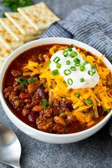

Chili

Description
This is my mother's famous chili bowl. I have had this chili ever since I was a kid. It is one of my favorite
recipies. Usually I add avacado and crackers to make it even better. It is very easy to make and takes under 30 minutes.
It has 4 different types of beans along with red onions and ground turkey. It is very useful for meal prepping, and gatherings
as it serves a lot of food for a little amount of time.
Ingredients
1 1/2 Pound Ground Turkey
1 Red Onion
1 Can Black Beans
1 Can Chili Beans
1 Can Rotele Tomatoes
1 Can Condensed Tomatoe Soup
Steps:
Dice Onion
Put Turkey and 1/2 Onion in pot on med heat
Add Chili Flakes and Red Pepper Spice
Cook till meat isnt red
Add rest of onion and cans
Put heat on low
Stur till done 20-ish minutes